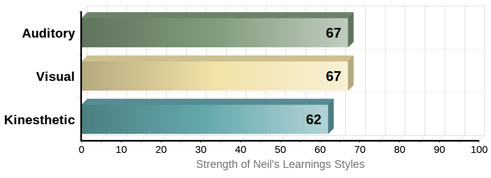
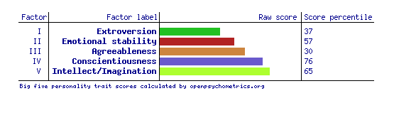

Personal Profile
Myers-Briggs test
Results showed below.

Source: https://www.16personalities.com/
My interpretation from this test results is that I tend to be a logic and rational thinker with precise executive skills to be able to achieve goals with great commitment. I would be a solid team player in a group mix playing a vital part in organizing, structuring, orientating and leading group members to succeed in any challenges. The weak spots from my personality would be sometimes being stubborn, inflexible at work and expecting others to have reciprocal effort on the common goal.
Personality Max™ Report- Learning Style
Results showed below
Source: https://personalitymax.com/
People usually have 3 major ways in perceiving knowledge and skills, which are by hearing, watching and doing. The findings from this website based on my inputs shows that I acquire knowledge predominately through auditory and visual materials. In terms of groupwork, I have the abilities of comprehending graphs, tables or drawings, as result of that, I could be good at taking notes, setting road map/tracks for my groupwork. I could be easily distracted by background noise, music or side-track chatting when at work.
Big 5 Factors
Results showed below
Source: https://openpsychometrics.org/tests/IPIP-BFFM
The fact that I score high in conscientiousness and intellect/imagination columns indicates I am responsible diligent worker with more openness and creativity. They are favourable traits welcomed by groups of great minds. However, the low percentiles of 37% in extroversion and 30% in agreeableness show that I lean towards to introvert side and could be critical or harsh to team members.